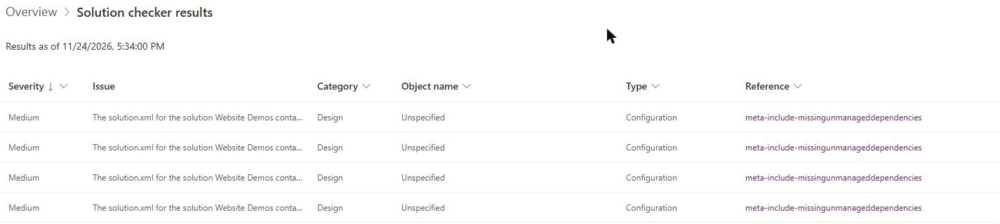
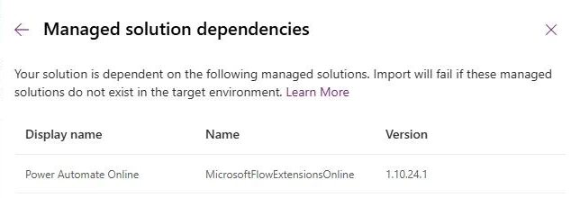

- Power Automate
- Level 10 · Enterprise ALM and admin · 2 of 6
Solution checker and flow checker
Two free checkers look at your work before it goes anywhere: flow checker for one flow in the designer, and solution checker for a whole solution, including its metadata.
Two checkers, two scopes
WhatStatic analysis: errors and warnings found without running anything.
WhyA missing dependency found in Dev costs minutes; found at import, it costs a failed deployment.
DemoA removed value in one flow, and a connection reference missing from the solution.
Before every export
Each changed flow: Flow checker → fix errors
Solution: Solution checker → Run
Critical/High issues or missing dependencies?
Yes
Fix, run again
No
Export (with “Run solution checker on export”)
Flow checker

Errors stop the flow saving or working; warnings are better-practice hints.
Solution checker

What it found and what export said
| Where | Finding |
|---|---|
| Solution checker | Medium unmanaged dependency on a connection reference not in the solution |
| Export wizard | Missing required component: a Dataverse connection reference |
| Fix | Add existing → Connection reference (or Add required objects), run again |


Making it mandatory
In a Managed Environment, admins can set solution checker enforcement to Warn or Block on import. Pipelines' checker task can fail a build.
New to this? Start from the basics optional
Dependency: something an object needs to work.
Common mistakes
- Skipping the missing-components step.
- Connection references created outside the solution.
- Treating no errors as “the logic is right”.